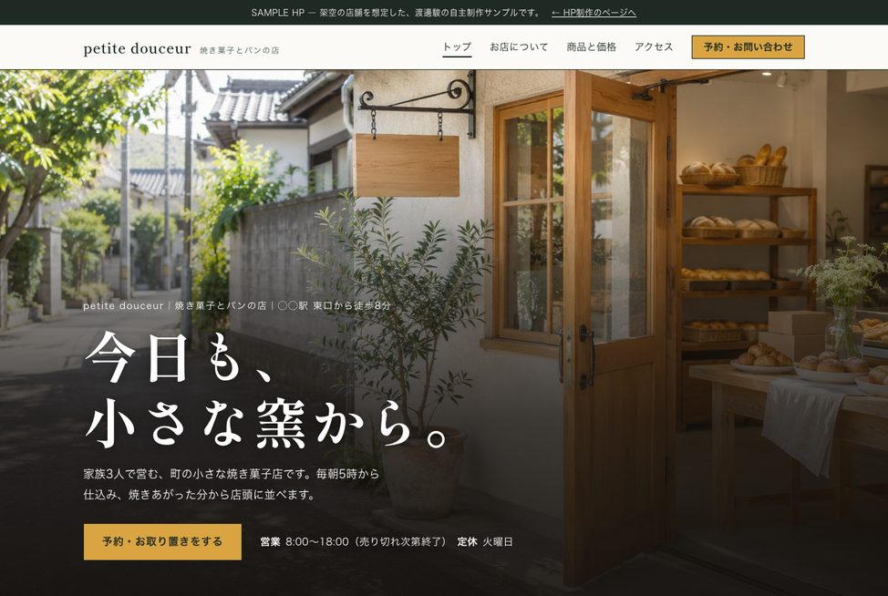
架空の焼き菓子店「petite douceur」のホームページを、どんな順番で、何を考えて作ったのか。調べるところから、作り直し、公開前の計測、公開後の2度の見直しまでをまとめました。実際のご依頼でも、同じ流れで進めます。
※自主制作のサンプルで、お客様からご依頼いただいた案件ではありません。お店の名前・商品・価格もすべて架空です。
同業のお店のサイトを、先に調べる。
実際のパン屋さんのサイトや紹介記事を調べ、どんな項目が載っているかを一覧にしました。自分の頭の中だけで項目を決めると、お客様が知りたいことが抜けやすいからです。
| 載せる項目 | 最初の版 |
|---|---|
| 営業時間・定休日・「売り切れ次第終了」 | あり |
| 商品と価格・アレルギーの案内 | あり |
| 焼き上がりの時間 | 足した |
| 取り置きの受付時間と、締め切り | 足した |
| その日の焼き上がりを知らせる先（SNS） | 足した |
| 駐車場・イートインの有無 | 足した |
| 贈り物の包装・発送の可否 | 足した |
「売り切れ次第終了」のお店では、来る前に「何時に何が焼き上がるか」「取り置きは何時まで頼めるか」を知りたい人が多いはずです。そこで、商品のページに焼き上がりの時間を、ご予約のページに取り置きの締め切りを入れました。
参考にした記事：静岡新聞アットエス（パン屋の紹介記事）ほか
ページの数と、それぞれに載せることを決める。
調べた項目を、5つのページに振り分けました。デザインに入る前に、ここで中身を固めます。
| ページ | 載せること |
|---|---|
| トップ | お店の雰囲気、お知らせ、大事にしていること、人気の商品、どうぶつパン |
| お店について | お店の成り立ち、一日の流れ、家族3人の紹介 |
| 商品 | 焼き菓子とパンの一覧・価格、アレルギーの案内、焼き上がりの時間 |
| アクセス | 営業時間、住所、駐車場、イートインの有無、駅からの道順 |
| ご予約 | 取り置き・予約のフォーム、受付時間と締め切り、よくある質問 |
最初の版を作る。
ポップで親しみやすい雰囲気にするため、丸みのある文字、太い線、少しずらした影を使いました。写真の上には、白い角丸の囲みを置いています。
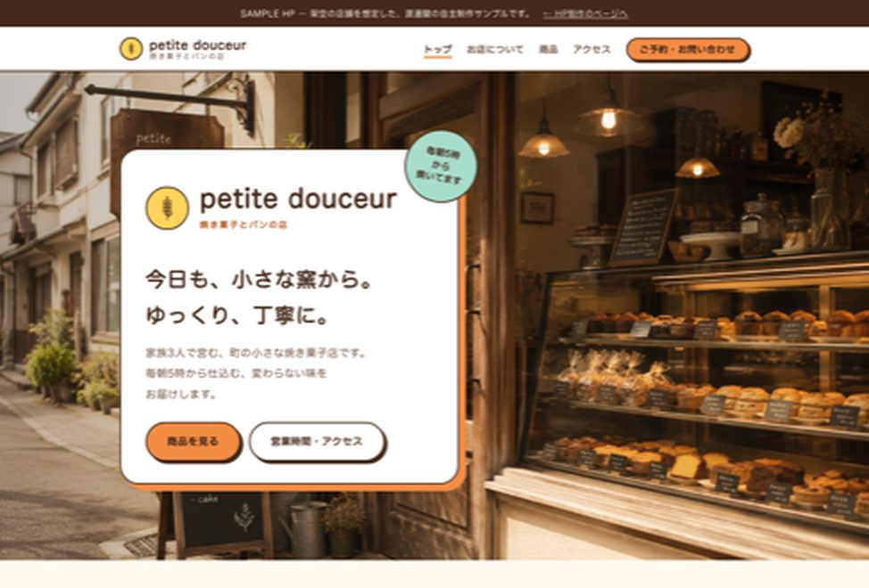
見てもらい、意見をもとに作り直す。
依頼者の立場で見てもらい、次の意見をもらいました（自主制作のため、依頼者役として見てもらったものです）。
この3つを受けて、次のように作り直しました。
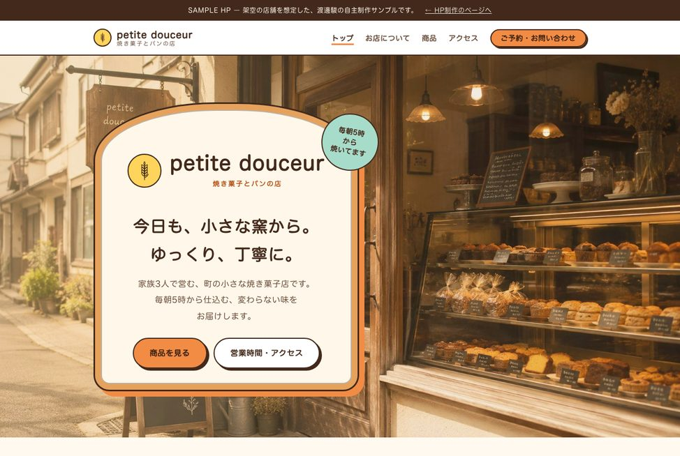
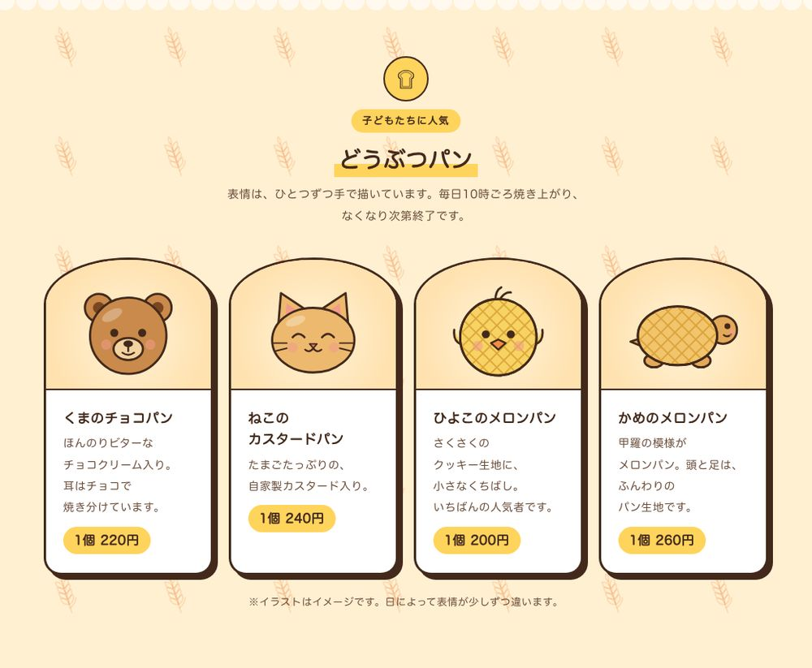
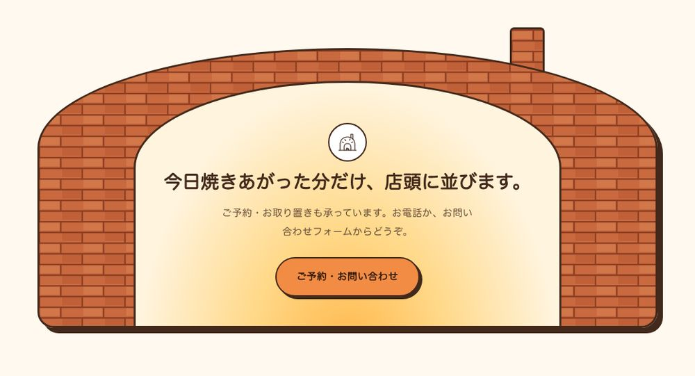
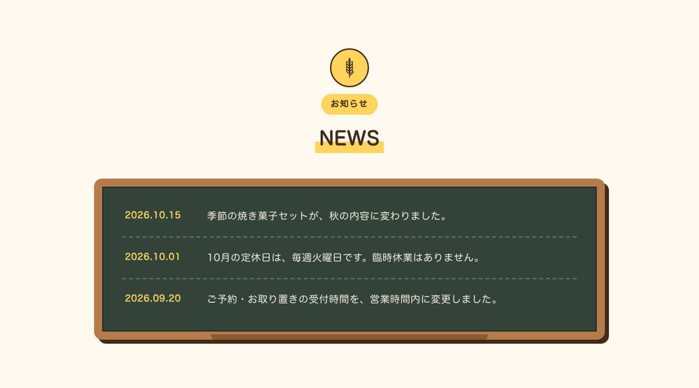
ページ全体で見ると、次のように変わりました。
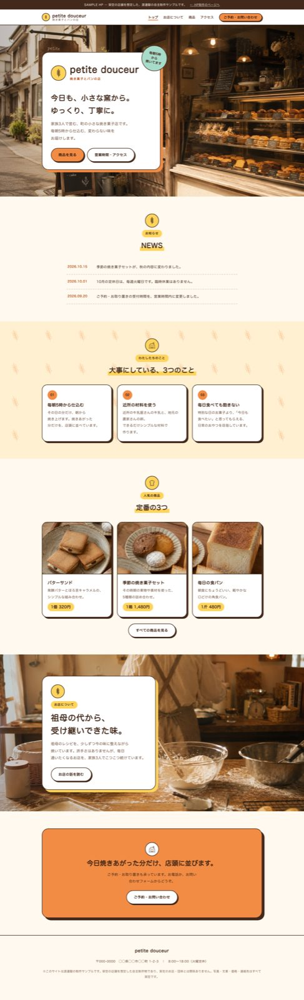
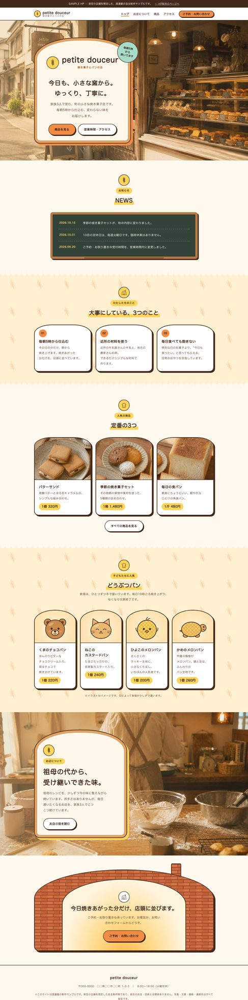
公開する前に、測って直す。
スマホでの見え方とリンク切れを確かめたうえで、Googleの計測ツール「Lighthouse」で、スマホでの表示の速さを測りました。
1回目の計測では82点でした。写真を元の大きさのまま表示していたことが、主な原因です。写真を表示の大きさに合わせて縮小し、スマホ用の小さい写真を用意して、画面の大きさで使い分けるようにしました。
あわせて、検索とSNS向けの設定も入れました。店舗の名前・住所・営業時間を、検索エンジンが読み取れる形（構造化データ）でも書き込み、シェアされたときの見出しと画像も設定しています。
※点数は、STEP 04の版で計測したものです。計測する環境や日によって変わります。サンプルは架空のお店のため、検索結果には出さない設定にしています。
公開後に見直し、配色と構成を作り直す。
公開したあとに見返すと、ページ全体がクリーム色とオレンジの一色に寄っていました。どの欄も「丸いアイコン → 小さなラベル → 下線つきの見出し → カードを横に並べる」という同じ並びで、生成AIで作ったサイトによくある形です。色が商品写真と重なり、パンの焼き色も目立ちませんでした。
そこで、パン屋さんのサイトの配色例と、「AIっぽい」と言われやすいデザインの特徴を調べ直しました。色の候補を3つ作り、構成と形は同じまま、色だけを差し替えて見比べています。
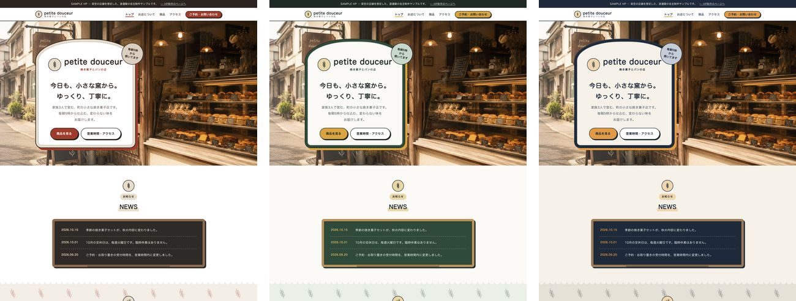
選んだ案をもとに、次のように作り直しました。
| 変えたこと | 理由 |
|---|---|
| 配色を、生成り×深緑×小麦色に | オレンジや茶色が多いパン屋さんのサイトの中で、覚えてもらいやすくするため。緑の地には、パンの焼き色が映えます |
| 太い線とずらした影は、どうぶつパンとかまどだけに | 遊びのある表現を1か所に集め、ほかの欄は読みやすさを優先するため |
| 最初の画面に、営業時間と予約のボタン | 来る前にいちばん知りたいことを、最初に見せるため |
| 焼き上がりの時間を、トップに時刻で | 「売り切れ次第終了」のお店では、何時に行けば買えるかが大事なため。STEP 01で商品のページに入れた内容を、トップにも出しました |
| 人気の商品は、1つを大きく | 3つを同じ大きさで並べるより、まず食べてほしい1つが伝わるため |
| 写真の暖色の加工をやめる | STEP 04で温かい色味にそろえましたが、全体が同じ色に寄る原因になっていたため |
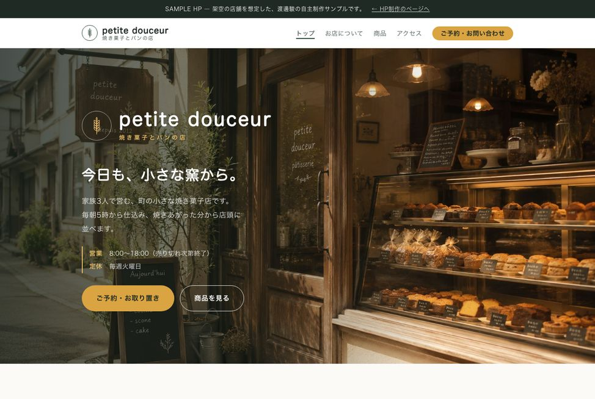
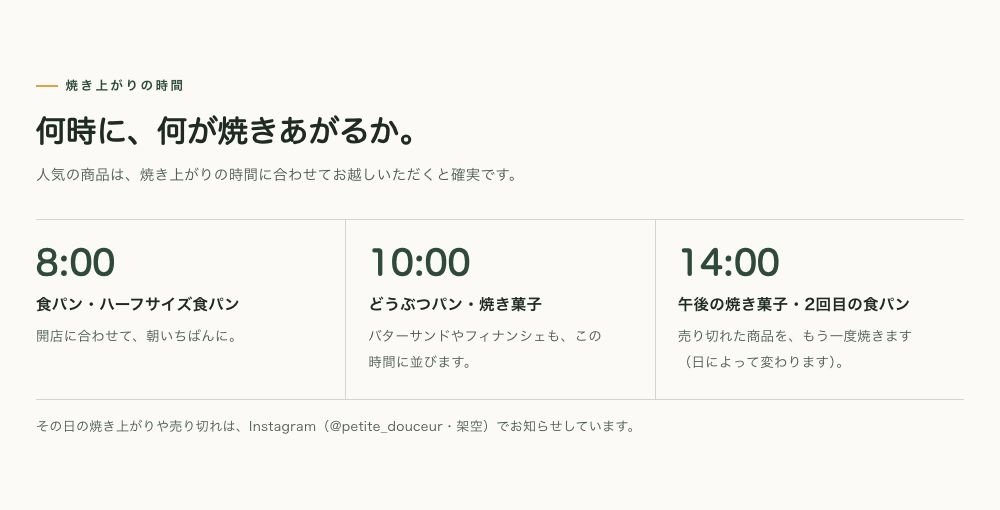
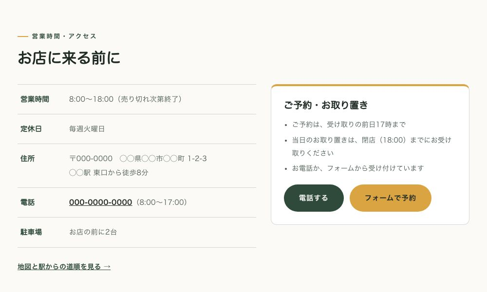
ページ全体で見ると、次のように変わりました。
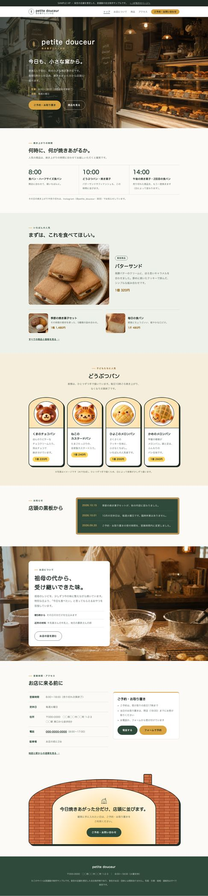
文字と背景の色の組み合わせは、読みやすさの目安（コントラスト比4.5以上）を満たすことを計算で確かめています。
写真と構成を見直し、お店の一日として組み直す。
STEP 06の版を見返すと、色は変わっても、形にはまだ生成AIで作ったサイトによくある特徴が残っていました。情報を角の丸い四角で囲み、ボタンや値段は丸いラベル、見出しは丸ゴシック。まず、生成AIがやりがちなデザインの失敗を48項目にまとめた点検表をもとに、囲みをやめ、罫線と時刻表で組み直しました。
それでも、安っぽさは残りました。原因を洗い出すと、いちばん大きいのは写真でした。どの写真も同じ琥珀色の光で、生成画像らしさが強く出ていたこと。商品写真は1枚の画像を切り分けたもので、高解像度の画面ではぼやけていたこと。もうひとつは、同じ並びを6回繰り返していて、ページのどこにも見せ場がなかったことです。
そこで、構図の違う3案（店先の写真が主役／紙袋と値札／お店の一日）を比べました。選んだのは、「何時に何が焼きあがるか」というこのお店ならではの事情を活かせる、お店の一日の案です。写真は、時間帯の光、文字を重ねる余白、器のそろえ方まで指定した指示文を書き、6枚とも作り直しました。
| 変えたこと | 理由 |
|---|---|
| 写真を6枚作り直す | 時間帯ごとの自然な光にそろえ、商品写真は表示の大きさに合う解像度で用意するため |
| 最初の画面は、店先の写真に見出しを重ねる | 写真と言葉を一つの場面として見せ、何のお店かを最初に伝えるため。文字の下は写真を暗くして、読みやすくしています |
| 焼き上がりの時刻を、写真のすぐ下の帯に | 次の焼き上がりがすぐにわかるようにするため。押すと、その時間の説明に移ります |
| 時間帯ごとに、背景の色を変える | 夜明け前の紺から、朝の生成り、午後の小麦色、夕方の焦げ茶へ。スクロールすると、お店の一日が進んでいくように見せるため |
| 場面ごとに、組み方を変える | 写真に見出しを重ねる、写真と文章を並べる、大きな文字で伝える、など。同じ並びの繰り返しをやめるため |
| 見出しと時刻は明朝、角丸の囲みは使わない | 丸ゴシックや角丸に頼らず、写真と言葉で親しみを出すため |
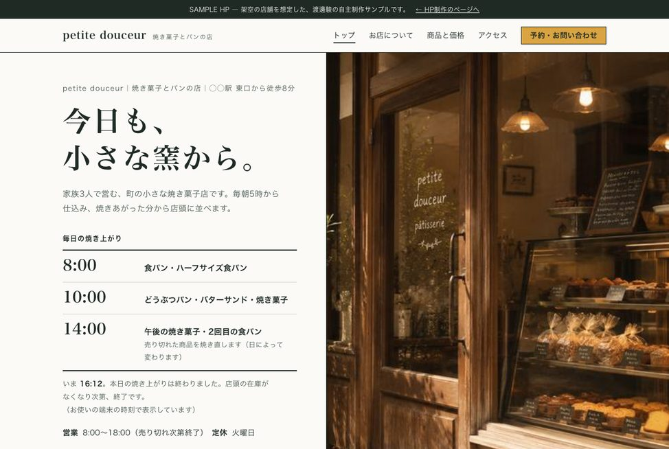
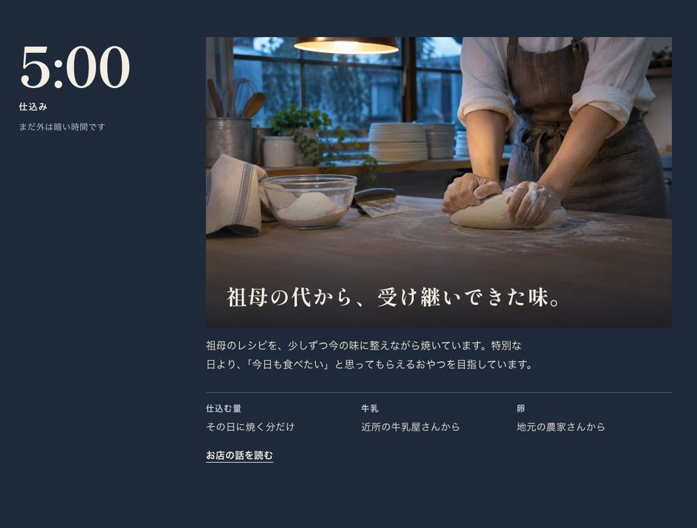
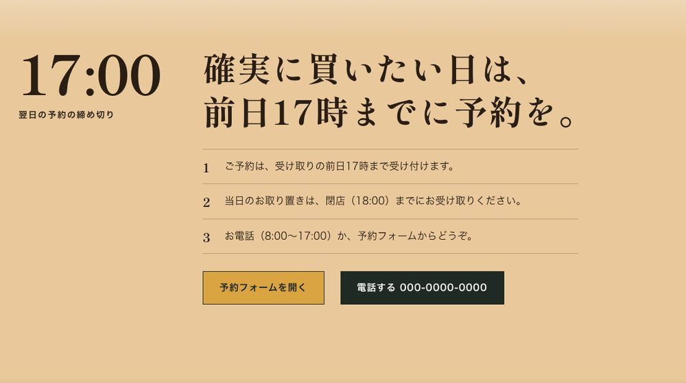
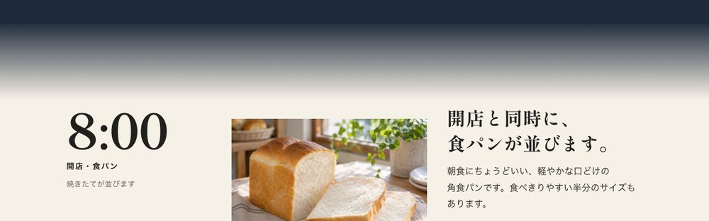
ページ全体で見ると、次のように変わりました。
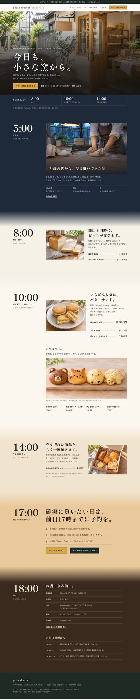
文字と背景の色の組み合わせは、時間帯ごとにすべて、読みやすさの目安（コントラスト比4.5以上）を満たすことを計算で確かめています。写真はすべて画像生成AIで作ったイメージです。この版の表示の速さは、まだ計測していません。
実際のご依頼でも、同じ流れで進めます。
調べる → 構成を決める → 作る → 見ていただいて直す → 測って確かめる → 公開後も見直す。お店の方にお話をうかがいながら、この順番で一緒に作っていきます。